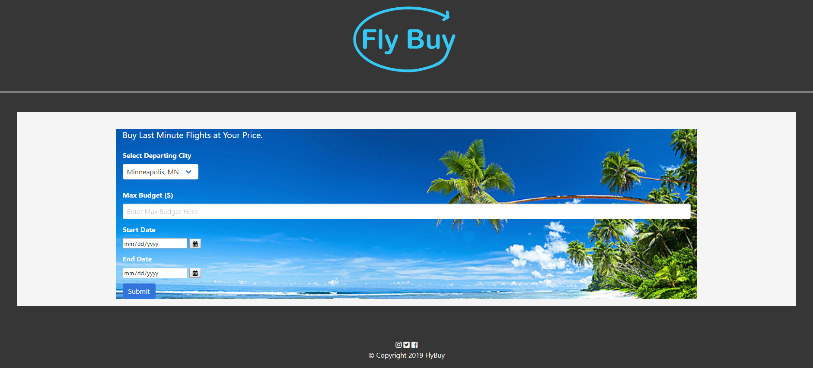

Resume: Under Construction!
Projects:
-
Giphy Lookup
Description: Click on the buttons to show 10 snack gifs based on the name of the button. Extra buttons can be added by using the text field and hitting the "Add a new snack" button. Click on the gifs to make them animated and click again to change back to still images.

-
Crystal Collector Game
The goal of the game is to get your score to equal the target score. Crystals are assigned a value and must be clicked to add to your current score. If you reach the target score or go over the game will track it as a win or a loss and reset using different target score.

-
Fly Buy Flight Lookup
Site designed to look up cheap flight destinations when on a budget. Once a destination is presented, you can click on it to show events in that area during your stay that you can go to. Clicking on the event links will bring you directly to Ticketmaster's site for that event.
 -
Train Scheduler
Can be used to track different trains using Firebase. New trains can be added by the user and will then show for everyone using the site. Moment.js is also used to track the next arrival and the minutes away from that arrival in real time.

-
This was our second group project that I worked on with 4 other people in my Univerity of Minneosta Full-Stack Web Development boot camp. We created a website where people can go to rate other drivers on the road. The technologies that we used were HTML, CSS, Bootstrap, Javascript, jQuery, Node.js, MySQL, along with Passport.js and BCrypt for user authentication. Our presentation to our class on how the application works can be seen here.